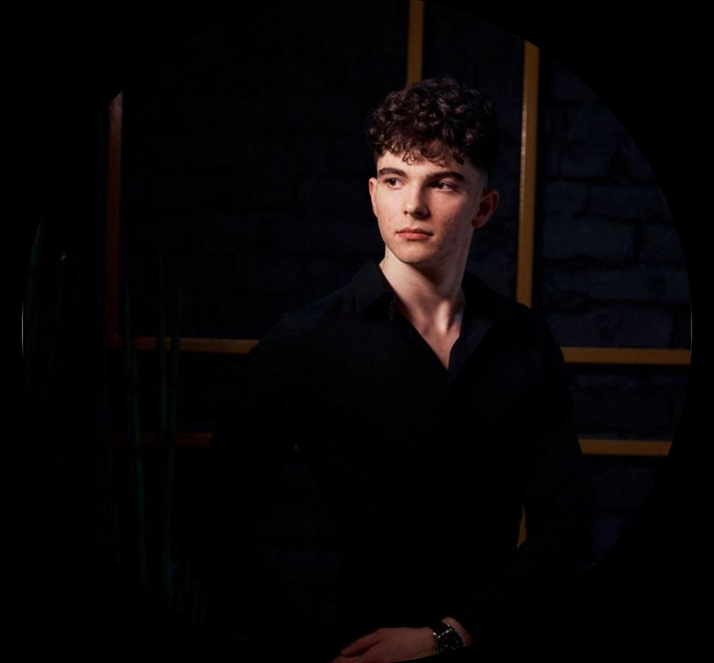

George-Andrei ROMAN

Education:
- October 2023 to present:
- "Babes-Bolyai" University, Cluj-Napoca, Romania - Specialization: Computer-Science
- September 2019 - July 2023:
- "Mihai Eminescu" National College, Satu Mare, Romania - Specialization: Mathematics and Computer Science
-
Baccalaureate Diploma, Final grade: 9.40 / 10
Skills:
- Hard Skills:
- Programming Languages: Java; C/C++; Python; Assembly
- Database Management: SQL
- OOP
- Data Structures
- Operating Systems
- Soft Skills:
- Critical Thinking; Analytical Skills; Creative Problem Solving; Team Coordination; Active Listening; Communication
- Certificates:
- Relevant Projects:
- Python - Console-Based Planes Board Game (Human vs Computer)
- C++ - Shopping Application (GUI) (including User and Administrator mode)
- SQL - Olympic Games Database
- Java & Spring Boot - Books & Authors REST API
- HTML - Resume Website
- Languages:
- Romanian - native
- English - Professional, Fluent - Cambridge FCE - Level B2
Others:
- Driving license - B category, May 2022
- Hobbies: physical training, playing & watching football, travelling
- Flexible towards remote work
Contact Information